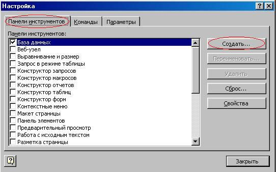

Теоретична частина
У Microsoft Access існує спеціальний засіб для створення макросів Конструктор макросів. Розглянемо процес створення макросу з допомогою Конструктора. Конструктор макросів. Відкрити вікно Конструктор макросів для створення нового макросу можна двома способами:
- Розкрийте список макросів у вікні База даних, клацнувши лівою кнопкою миші по ярлику Макроси, та натисніть кнопку Створитиу верхній частині вікна.
- Натисніть стрілку вниз на кнопці Новий об’єктна панелі інструментів База даних та виберіть пункт Макрос.
Верхня частина вікна Конструктора – панель описів – складається з декількох стовпців. За замовчуванням на цій панелі відображаються два стовпці: Макрокоманда та Примітка. Панель описів дозволяє визначити послідовність макрокоманд, у тому числі складається макрос. Рядок у стовпці Макрокомандає поле зі списком, у якому можна вибрати потрібну макрокоманду. Рядок у стовпці Примітка- це звичайне текстове поле, в яке можна ввести коментар, що описує виконувану дію.
Коли поле Макрокоманда заповнено, у нижній частині вікна Конструктора макросу з’являється панель аргументів, яка служить для введення значень аргументів відповідної макрокоманди. Список полів на цій панелі залежить від обраної макрокоманди і може бути відсутнім, якщо макрокоманда не має аргументів. Таким чином, при створенні макросів не потрібно запам’ятовувати список аргументів кожної макрокоманди. На панелі аргументів є два поля, які дозволяють задати ім’я фільтра та умову відбору записів. Для того, щоб задати умову відбору записів, можна скористатися виробником виразів.
Такий макрос можна використовувати у формі або звіті для того, щоб обмежити кількість записів, що відображаються. Існує ще один дуже простий спосіб уведення макрокоманди. Допустимо, потрібно створити макрос, який повинен відкривати форму “Обчислення” у додатку “ db1 ”. Для цього у вікні База данихпотрібно натиснути на формі, потім, використовуючи панель інструментів (спосіб 2), відкрити Конструктор макросів та перетягнути за допомогою миші Форму “Обчислення” у полі Макрокомандавікна Конструктор макрос.
Тоді у полі Макрокомандаавтоматично з’явиться макрокоманда Відкрити Форму, а на панель аргументів автоматично заповнюються поля: у полі Ім’я форми з’являється ім’я форми “Обчислення”, в полі Режим- значення за замовчуванням Форма, в полі Режим вікна– значення Звичайне.Інші поля залишаться порожніми.
Крім того, можна зробити записи в цій формі недоступними для змін, для цього в полі Режим данихпотрібно ввести значення Тільки читання.
Автоматичне створення макрокоманд шляхом перетягування об’єктів
Аналогічно можна створювати макрокоманда, перетягуючи з вікна База даних таблиці, запити, звіти та інші макроси. При цьому будуть створюватися відповідні макрокоманди: Відкрити Таблицю, Відкрити Запит, Відкрити Звіт, Запуск Макросу.
Для введення аргументів макрокоманди найчастіше потрібно вибрати значення зі списків або вводити вирази. Для введення виразів можна скористатися виробником виразів, кнопка якого знаходиться праворуч від поля аргументу. Ще одна кнопка будівельника виразів знаходиться на панелі інструментів. Як і інших випадках, перед виразом потрібно ставити знак рівності (=). Винятки становлять аргумент Виразмакрокоманди задати Значення та аргумент Число повторень макрокоманди ЗапускМакросу. Якщо ввести знак рівності перед виразом, що задає значення цих аргументів, воно обчислюватиметься двічі, що може призвести до небажаних результатів.
Якщо в якості аргументу макрокоманди необхідно задати ім’я об’єкта бази даних, то його можна або ввести за допомогою клавіатури, або вибрати зі списку, або вказати назву об’єкта, перетягнувши його з вікна бази даних.
Отже, створена нами макрокоманда відкриватиме форму “Обчислення” в режимі Тільки читання та показуватиме в ній лише менеджерів із продажу. Як було зазначено раніше, макрос може містити послідовність з кількох макрокоманд. Тому в цьому ж макросі в наступному рядку ми виберемо макрокоманду Повідомлення, яка після відкриття форми відображатиме діалогове вікно з повідомленням про те, які клієнти представлені у формі. Для цього введемо у поле Повідомлення на панелі аргументів текст повідомлення, наприклад
Встановлено фільтр за Прізвищем, решту поля можемо залишити без зміни. Аргумент Сигнал визначає, чи виведення повідомлення супроводжуватиметься звуковим сигналом. Аргумент Тип визначає вид діалогового вікна повідомлення. Аргумент Заголовок дозволяє задати текст, який буде виведено у заголовку вікна повідомлення.
Якщо база даних велика, відбір записів у формі може зайняти деякий час, тому рекомендується вивести на екран курсор у формі пісочного годинника, який показуватиме, що йде обробка даних. Щоб зробити це, скористаємося макрокомандою Пісочний Годинник. Макрокоманди в макросі виконуються у тій послідовності, в якій вони записані у стовпці Макрокоманда, тобто зверху донизу. Макрокоманду Пісочний Годинник потрібно поставити першою, тому що курсор повинен змінитися перед виведенням форми. Таким чином, нам потрібно вставити новий рядок на панелі описів. Для цього встановимо курсор у перший рядок панелі та натисніть кнопку Додати рядкина панелі інструментів або просто клавішу . З’являється пустий рядок. У цьому рядку у полі Макроко команда виберемо макрокоманду Пісочний Годинник. В полі увімкнути панелі аргументів з’явиться значення Такза замовчуванням, що нам і потрібно. Щоб повернути початковий вид покажчику миші, наприкінці створеного макросу потрібно ввести таку саму макрокоманду Пісочний Годинник, але зі значенням Ні аргументу увімкнути.
Власне, цю макрокоманду краще поставити перед макрокомандою виведення повідомлення екран. Це легко виправити, оскільки макрокоманди легко змінюються місцями за допомогою миші. Щоб поміняти дві останні макрокоманди місцями, виділіть останній рядок, клацнувши лівою кнопкою миші по області виділення рядків (ліворуч у вікні Конструктора) і перетягніть рядок вгору. Горизонтальна лінія показує місце нового положення рядка. Відпустіть кнопку миші, коли ця лінія опиниться над передостаннім рядком. Тепер залишається лише зберегти створений макрос. Для цього можна вибрати меню Файл команду Зберегти яка бо натиснути клавішу . З’явиться вікно збереження макросу. Введіть ім’я макросу в полі введення, дотримуючись правил іменування об’єктів Access, наприклад, менеджери з продажу.
Створення груп макросів
При розробці програми з використанням макросів кількість макросів може бути дуже великою. Тому важливо добре організувати доступ до потрібних макросів. Для цього в одному об’єкті Макрос можна поєднати кілька макросів. Наприклад, рекомендується всі макроси, пов’язані з подіями у формі або звіті, об’єднати в окремий об’єкт, який відповідає даній формі або звіту. Щоб це було, кожен макрос групи повинен мати своє ім’я, а ім’я об’єкта Макрос буде ім’ям групи макросів.
Щоб створити групу макросів:
- Відкрийте Конструктора макросів.
Рис 5. Відкриття Конструктора макросів
- Натисніть кнопку Імена макросів на панелі інструментів. На панелі описів у вікні Конструктора макросів з’явиться ще один стовпець Ім’я макросу.
Рис. 6.Додатковий стовпець Ім’я Макроса”
- У цей стовпець введіть ім’я першого макросу. Інші поля даного рядка краще залишити порожніми - це полегшить переміщення та копіювання макрокоманд.
Рис. 7.Введення в стовпець першого імені макросу
- Починаючи з наступного рядка, введіть усі макрокоманди макросу та відповідні аргументи для кожної макрокоманди.
Рис. 8.Введення всіх макрокоманд і аргументи кожної макрокоманди в макрос
Для вказівки кінця макросу не потрібно окремої макрокоманди. Access продовжує виконання макросу, що входить до групи, доки не виявить рядок, що містить ім’я в стовпці Ім’я макросу, або поки не дійде до останнього рядка вікна макросів.
При обробці макросу порожні рядки ігноруються, тому їх зручно використовуватиме розділення макросів у групі. Цей прийом, а також введення коментарів для складних макросів, що складаються з великої кількості макрокоманд, дозволяє покращити читання макросів.
Для запуску одного з макросів групи використовується повне ім’я посилання на макрос. Повне ім’я макросу формується так: ім’я Групи. ім’я Макроса.
Запуск макросу з вікна Конструктора макросу
Цей спосіб застосування для тестування щойно створеного або виправленого макросу. Якщо макрос у вікні Конструктора макросу один, то для його запуску потрібно просто натиснути кнопку Запуск 9.Кнопка запуску макросу на панелі інструментів
Тепер розглянемо створення спеціальної панелі інструментів та розміщення на ній кнопки виклику макросу.
- Клацніть по ярлику Макроси на панелі об’єктів у вікні База даних та виділіть потрібний макрос.
- Виберіть команду Сервіс, Макрос, Створити панель інструментів із макросу. На екрані з’являється пуста панель інструментів.
Кнопка отримує таку саму назву, як ім’я макросу, для якого вона створена.
Той самий результат можна отримати іншим способом:
- Відкрийте вікно Налаштування, клацнувши правою кнопкою миші на панелі інструментів.
- У діалоговому вікні, що з’явилося, розкрийте вкладку Панелі інструментівта натисніть кнопку Створити.

Рис. 12.Діалогове вікно " Налаштування” із вкладкою “ Панель інструментів”, кнопка “ Створити”
- У діалоговому вікні, що з’явилося, введіть ім’я нової панелі інструментів мої макроси і натисніть кнопку ОК. Відобразиться порожня панель інструментів.
Рис. 13.Введення іменіновою Панелі інструментів
- Виберіть вкладку Команди.
- Виберіть у списку Категорії значення Усі макроси, а у списку Команди знайдіть макрос Open.
- Перетягніть цей макрос за допомогою миші на порожню панель інструментів.
Бачимо, що цей режим відображення кнопки позначений як Основний стиль. Взагалі кажучи, на кнопці можна помістити не лише піктограму, та й текст або текст і піктограма спільно. Якщо ви бажаєте помістити на кнопці текст (назва кнопки), введіть цей текст у поле Ім’я. Замовчанням у цьому полі відображається ім’я макросу.
Ви можете помістити на кнопку інший значок, обравши вподобану картинку на спеціальній панелі. Для відображення набору стандартних значків виберіть у контекстному меню команду Вибрати значок для кнопки. Якщо жодна з картинок не підходить, можна вибрати найближчий по оформленню значок, а потім виправити його в спеціальному редакторі. Щоб відкрити вікно Редактор кнопоквиберіть у контекстному меню команду Змінити значок на кнопку.
- Натисніть кнопку Змінити виділений об’єкту діалоговому вікні Налаштування.
- Виберіть у контекстному меню команду Вставити значок для кнопки. Рис. 19.Властивість кнопки “ Open”
- Введіть бажаний текст у полі Спливаюча підказка.
На створений вами панелі інструментів можна розмістити будь-які інші кнопки, не тільки кнопки для запуску макросів. Коли завершено створення панелі інструментів, ви можете перемістити її на вільне місце у верхній частині екрана (або помістити біля будь-якої іншої межі екрана).
Якщо потрібно створити панель інструментів для виклику декількох макросів, ми рекомендуємо об’єднати ці макроси в одну групу (створення групи макросів описано в попередньому розділі). Створення такої панелі інструментів можна здійснити за допомогою однієї команди Сервіс, Макрос, Створити панель інструментів із макросу. Спробуйте це зробити для однієї з груп макросів у базі даних «db1», наприклад, «Open». За допомогою цієї команди створюється панель інструментів з кнопками для виклику кожного макросу з групи, причому на кнопках відображаються імена відповідних макросів. Нова панель інструментів отримує таке саме ім’я, як ім’я групи макросів. При бажанні можна замінити текст на кнопках значками, як описано вище.
У базі даних зберігається інформація про її об’єктів. Будь-яка зміна стану форми або звіту називається подією. Кожен із цих об’єктів має свій набір подій.
З подіями зручно пов’язувати макроси. Спробуємо зв’язати створений нами макрос Повідомлення з відкриттям бази даних:
- Маркуйте макрос Розміщення на екрані у вікні бази даних.
- Виберіть у меню Правка команду Перейменувати і привласніть макросу Повідомлення нове ім’я AutoExec (макро з таким ім’ям автоматично виконується під час завантаження бази даних). Ви можете довільним чином використовувати малі та великі літери.
Тепер макрос пов’язаний із відкриттям бази даних. Таким чином, автоматизуються операції, які повинні завжди виконуватися в момент завантаження бази. При кожному відкритті бази даних Access повіряє чи є макрос з ім’ям AutoExec, і якщо знаходить, виконує його. Інакше відкриття бази не супроводжується додатковими діями. Всередині однієї бази даних може використовуватися лише один макрос AutoExec.
Щоб перевірити працездатність макросу, закрийте та відкрийте базу даних.
Якщо ім’я AutoExec присвоєно макро групі, то при відкритті бази даних буде виконано лише перший макрос цієї групи! Щоб при завантаженні бази послідовно виконували кілька макросів, введіть у макрос AutoExec макрокоманду Запуск Макросу,що дозволить виконати макрос з довільним ім’ям (ім’я задається аргументом) і повернутися до наступної Запуск Макро сума команді в макросі AutoExec.
Макрос AutoExec не виконується, якщо перед відкриттям бази даних натиснути та утримувати клавішу.
Доцільно створювати елементи керування (наприклад, кнопки) виклику макросів. Це значно спрощує та прискорює доступ до них. Зручним місцем розміщення таких елементів є заголовок чи примітка форми.
Як вправу спробуємо зв’язати з кнопкою макрос, який маркує активний запис форми та копіює її в буфер обміну:
- Створіть макрос Копіювати,що складається з наступних макрокоманд:
- Макрокоманда Аргумент
- Виконати Команду Select Record
- Виконати Команду Copy
- Збережіть макрос та закрийте його вікно.
- Відкрийте форму Перемикач та активізуйте режим конструктора.
- Викличте команду Ліворуч праворуч меню Вікно.
- Маркуйте макрос Копіювання записуу вікні бази даних та перетягніть його в область заголовка проекту форми.
Рис. 20.Перетягування макросу з вікна бази даних до області заголовка проекту форми
Як тільки ви відпустите кнопку миші, позиція кнопки макросу зафіксується. При необхідності її можна змінити за допомогою спеціальних маніпуляторів. Переміщення кнопки здійснюється за допомогою маніпулятора, розташованого в верхньому лівому куті маркувальної рамки.
Ім’я макросу автоматично відображається всередині кнопки. Якщо вона занадто довга, розмір кнопки слід збільшити. Щоб на кнопці було видно весь напис, можна зменшити розмір шрифту або створити напис, який відрізняється від імені макрокоманди. Редагування напису виконується після натискання кнопки. Для виходу з режиму редагування достатньо клацнути поза кнопкою.
Для зміни параметрів керуючого елемента Кнопка слід виконати на ньому подвійне клацання мишею, внаслідок чого відкриється вікно властивостей, якщо до цього воно не було на екрані.
Рис. 21.Вікно властивостей кнопки
Кожен елемент керування має список доступних подій. Однак дії при зв’язуванні завжди однакові. Наприклад, щоб зв’язати деякий макрос із переміщенням миші за формою, слід у режимі конструктора виконати подвійне клацання у вільній області поза приміткою форми та задати для події Переміщення вказівникаім’я макросу, що зв’язується.
Виклик програм та керування ними
За допомогою макросу можна запустити з Access програми Microsoft Office Виклик виконується однаково у всіх випадках і полягає головним чином у вказівці імені програми, що запускається. Макрос для виклику прикладної програми можна зв’язати з кнопкою форми, прискоривши таким чином доступ до потрібної програми:
- Створіть новий макрос. У першому рядку введіть макрокоманду Запуск Програми.
Рис. 22.Створення макрокоманди ЗапускДодатки”
- Як значення аргументу Командний рядоквведіть ім’я програми, що запускається, наприклад WinWord.
Рис. 23.Командний рядок з аргументом програми WinWord, що запускається
- Збережіть макрос під ім’ям Нотатки.
Рис. 24.Введення імені макросу
- Відкрийте форму Перемикачу режимі конструктора та перетягніть макрос із вікна бази даних у область заголовка форми.
При виклик і програми завжди наводиться повна специфікація файлу. У цьому вводити розширення годі було. Каталог, у якому зберігається файл, необхідно вказувати лише у тому випадку, якщо він не заданий командою PATH у файлі AUTOEXEC. BAT. Наприклад:
Як правило, при виклик і прикладних програм, що входять до комплекту постачання папка Windows вказується у команді PATH. Тому ім’я редактора у цьому макросі наведено без вказівки каталогу.
Слідкуйте за тим, щоб після закінчення сеансу роботи редактор було закрито коректно.